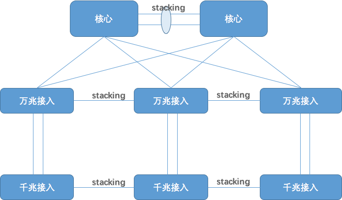
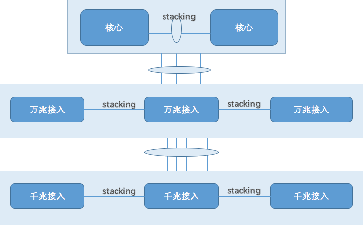
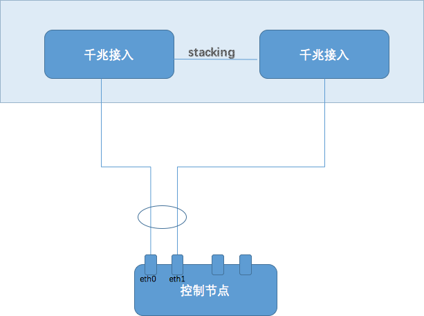
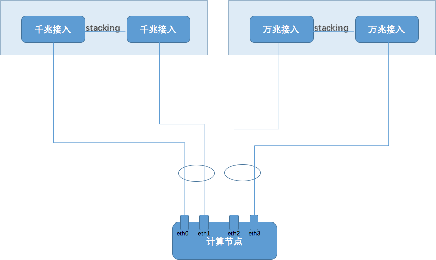
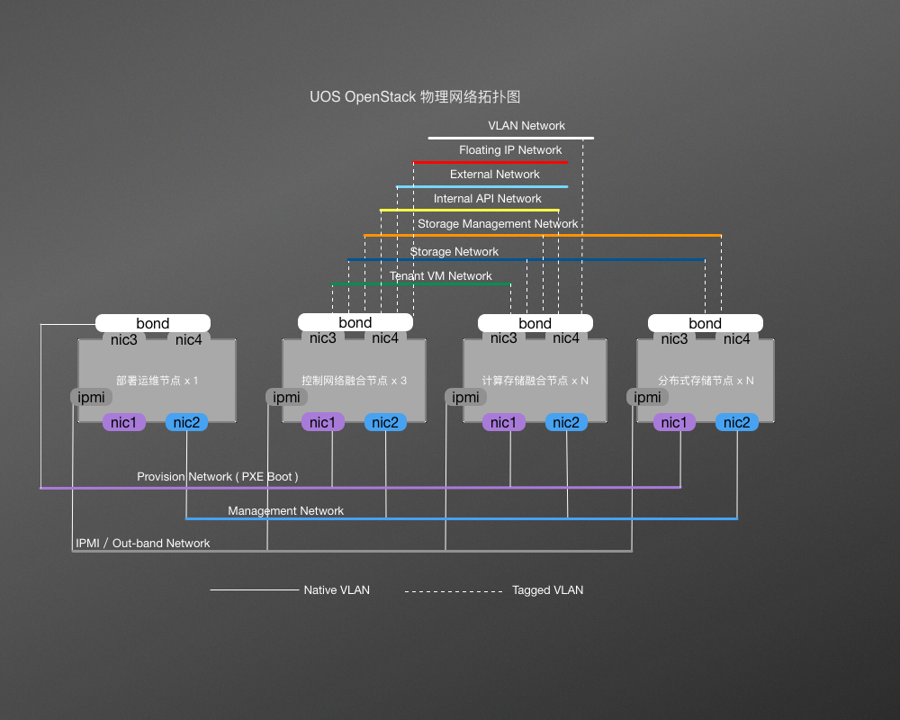

2. 环境规划与准备¶
本章介绍 UOS 云平台部署之前需要做的各种规划，比如服务器规划、网络规划、IP 地址规划等。
2.1. 物理网络规划¶
为提供稳定的云服务，物理网络的稳定性至关重要，UOS 云平台为此设计了服务器以及交换机的全冗余架构，最大程度的避免单点故障。
2.1.1. 交换机配置要求¶
接入交换机，每个机柜需要 1 台带 4 口 40G 全线速的 48 口全万兆 L2 交换机和 1 个带 2 口 10G 全线速的 48 口全千兆 L2 交换机（单机柜机器数量大于 10，且不考虑后续扩容，否则可用 24 口）。
核心交换机，需支持虚拟化技术，如华为 CSS，思科 vPC，华三 IRF2，Force10 VLT 等，另外核心交换机需要全 40G L3 交换机。
| 设备名称 | 配置说明 | 品牌 | 数量 |
|---|---|---|---|
| 核心交换机 | 全 40G 线速的 L3 交换机支持虚拟化技术 | 不限 | 2 |
| 万兆交换机 | 48 口全万兆 L2 交换机 4 个 40G 全线速端口 | 不限 | 3 |
| 千兆交换机 | 48 口全千兆 L2 交换机 2 个 10G 上行端口 | 不限 | 3 |
为提供接入交换机的冗余能力，我们强烈建议服务器使用链路聚合做双上联，理论上所有支持 VPC 或支持堆叠的交换机都可以使用，如 VPC（思科）、CSS（华为）、IRF（华三）、VLT or stacking（Dell）。
2.1.2. 交换机冗余架构¶
交换机冗余架构通过交换机的堆叠技术，将多个交换机合并成一个逻辑交换机使用，任意一台交换机故障，不会影响正常业务，交换机冗余架构示意图如下：
物理连接图
逻辑架构图
2.1.3. 各节点接入¶
UOS 云平台中可以制定多种角色的节点，分别承担不同的工作，各节点和交换机的接入示意图如下：
控制节点
控制节点提供整个 OpenStack 的控制平面，包含各个服务 API，数据库，消息队列以及高可用组件等，其接入交换机示意图如下：
计算节点
计算节点为平台提供计算资源，由于需要使用网络以及存储资源，因此需要接入万兆交换机，其接入交换机示意图如下：
网络节点
网络节点为平台提供网络资源，包括二层网络，三层路由，以及 DHCP 等服务，其接入交换机示意图如下：
存储节点
存储节点为平台提供存储资源，其接入交换机示意图如下：
2.1.4. 交换机网络规划¶
UOS 为最大程度的提供服务的可靠性和稳定性，按照实际需求，共抽象出了 7 种网络类型：
- 部署网络（Privisioning Network），主要用于部署时提供 PXE 和 DHCP 网络
- 存储网络（Storage Network），主要用于存储对外访问网络
- 存储管理网（Storage Management Network），主要用于存储内部数据交互网络
- 租户网络（Tenant Network），主要用于 SDN 网络
- 内部网络（Internal Network），主要用于内部 API 交互、RPC、数据库连接网络
- 外部网络（External Network），主要用于访问面板以及开放 API 的网络
- IPMI 网络（IPMI Network），用于远程管理物理机的网络
推荐将这 7 种网络隔离到不同的 VLAN 中，以提高性能和可靠性，推荐的 VLAN 规划如下：
| 网络类型 | VLAN ID | CIDR | 用途 |
|---|---|---|---|
| 部署网络 | 1101 | 10.x.1.0/24 | 用于部署时提供 PXE 和 DHCP 网络 |
| 内部网络 | 1102 | 10.x.2.0/24 | 用于内部API交互，RPC，数据库连接网络 |
| 存储网络 | 1103 | 10.x.3.0/24 | 用于存储对外访问网络 |
| 存储管理网络 | 1104 | 10.x.4.0/24 | 用于存储内部数据交互网络 |
| 租户网络 | 1105 | 10.x.5.0/24 | 用于计算节点与网络节点之间虚拟机数据通信 |
| 外部网络 | 1106 | 10.x.6.0/24 | 用于访问面板以及开放API的网络 |
| IPMI 网络 | 1107 | 10.x.7.0/24 | 用于远程管理物理机的网络 |
| FIP 网络 | 1108 ~ 1115 | 10.x.8.0/24 ~ 10.x.15.0/24 | 用于虚拟机 FIP 网络 |
| VLAN 网络 | 1116 ~ yyyy | 10.x.16.0/24 ~ 10.x.z.0/24 | 用于给租户直接使用的 VLAN 网络 |
注意：VLAN 号，以及 CIDR 为推荐设置，并没有强制要求，可以根据客户现场的网络情况灵活进行调整，CIDR 第二位，建议每家客户不一样，方便打通专有VPN。
2.1.5. 服务器网络规划¶
与交换机网络规划相对应，服务器的网络规划如下图：
为了方便运维，将 OverCloud 节点的第一块千兆网口规划为部署网络（Provisioning Network），在 BIOS 中需要将该网卡设置为 PXE 启动，设置为 Native VLAN，对应的交换机端口需要配置成 Access VLAN；剩下的两块万兆网卡需要做 Bonding，在实际部署时，会划分为 Tagged VLAN 子接口，对应的交换机端口需要配置为 Trunk VLAN，允许从该网卡发出的带 tag 的 VLAN 通过。
服务器根据以上物理网络配置，不同网卡划分到不同的 VLAN 中，规划如下：
| 服务器类型 | 千兆网口1（em1） | 万兆网口1（em3) / 万兆网口2（em4） | 远程管理网口 |
|---|---|---|---|
| 控制节点 | Native VLAN （Access VLAN 1101） | Tagged VLAN （Trunk VLAN 1102-1106） | VLAN 1107 |
| 计算节点 | Native VLAN （Access VLAN 1101） | Tagged VLAN （Trunk VLAN 1102-1106、1116-yyyy） | VLAN 1107 |
| 网络节点 | Native VLAN （Access VLAN 1101） | Tagged VLAN （Trunk VLAN 1102-1106、1108-1115） | VLAN 1107 |
| 存储节点 | Native VLAN （Access VLAN 1101） | Tagged VLAN （Trunk VLAN 1102-1106） | VLAN 1107 |
注意：在实际部署中，网卡编号根据服务器硬件配置不同，顺序可能不同，可能 em3、em4 为千兆口，em1、em2 为万兆口，需要根据实际情况调整。
2.2. IP 地址规划¶
2.2.1. 整体网络规划（一般场景）¶
| 服务器角色 | 软件角色 | 网段 | IP尾号 | 数量 | 说明 |
|---|---|---|---|---|---|
| 网络设备 | 1 ~ 18 | 18 | 网关 & 交换机 | ||
| 种子节点 | External | 19 | 1 | ||
| UnderCloud | PXE | 20 | 1 | ||
| zabbix | PXE | 21 ~ 23 | 3 | ||
| 24 ~ 29 | 6 | 扩展预留 | |||
| VIP | PXE VIP | PXE | 30 | 1 | VIP 范围：30-39 |
| Storage VIP | Storage | 30 | 1 | ||
| Storage MGMT VIP | Storage MGMT | 30 | 1 | ||
| Service VIP | Internal | 31 | 1 | Redis | |
| Internal API VIP | Internal | 30 | 1 | ||
| External API VIP | External | 30 | 1 | ||
| 30 ~ 40 | 11 | ||||
| 控制节点 | controller | MGMT、Storage、Storage MGMT、 Internal、External、Tenant | 41 ~ 43 | 3 | 控制节点为奇数 |
| 44 ~ 50 | 7 | 预留 | |||
| 网络节点 | Neutron | MGMT、Storage、Storage MGMT、Internal | 51 ~ 60 | 10 | 默认部署 3 台 |
| 计算节点 | nova / Ceph OSD | MGMT、Storage、Storage MGMT、Internal | 61 ~ 199 | 139 | 宿主机 |
| 存储节点 | Ceph OSD | MGMT、Storage、Storage MGMT、Internal | 249 ~ 200 | 50 | 从 249 向 200 部署 |
2.2.2. 控制节点网络规划¶
| 网络 | 地址 | 用途 |
|---|---|---|
| External API | x.x.6.x | OverCloud External API 的地址，用于 OverCloud 节点之外的外部访问 |
| Internal API | x.x.5.x | OverCloud Internal API 的地址，用于 OverCloud 节点之间内部访问 |
| PXE | DHCP(x.x.0.x) | 部署操作系统 |
| Storage | x.x.2.x | OverCloud 节点的 Ceph monitor 与 Ceph OSD 通讯 |
| Storage MGMT | x.x.3.x | OverCloud 节点 Ceph OSD 之间通讯的网络 |
| Tenant | x.x.4.x | VxLAN 情况下，Tenant 网络的地址 |
2.2.3. 网络节点网络规划¶
| 网络 | 地址 | 用途 |
|---|---|---|
| External API | x.x.6.x | OverCloud External API 的地址，用于 OverCloud 节点之外的外部访问 |
| Internal API | x.x.5.x | OverCloud Internal API 的地址，用于 OverCloud 节点之间内部访问 |
| PXE | DHCP(x.x.0.x) | 部署操作系统 |
| Tenant | x.x.4.x | VxLAN 情况下，Tenant 网络的地址 |
2.2.4. 计算存储融合节点网络规划¶
| 网络 | 地址 | 用途 |
|---|---|---|
| Internal API | x.x.5.x | OverCloud Internal API 的地址，用于 OverCloud节 点之间内部访问 |
| PXE | DHCP(x.x.0.x) | 部署操作系统 |
| Storage | x.x.2.x | OverCloud 节点的 Ceph monitor 与 Ceph OSD 通讯 |
| Storage MGMT | x.x.3.x | OverCloud 节点 Ceph OSD 之间通讯的网络 |
2.3. 服务器配置¶
2.3.1. 配置远程管理卡¶
远程管理卡可以实现远程对硬件、电源的管理和监控，在自动化部署的环节中，需要收集每台服务器的 IPMI 地址、用户名、密码等信息，因此需要设置好这些信息。
Dell iDRAC 配置
- 配置用户名、密码
- 配置 IP、Gateway 等（IP 和管理网 IP 规划对应，默认为 10.x.8.y）
2.3.2. 配置 BIOS¶
BIOS 配置主要有：
- CPU 硬件虚拟机的开启
- 启动模式设置为 BIOS 或 Legacy（不使用 UEFI）
- 第一张千兆网卡设置为 PXE 启动
不同品牌不同型号的服务器设置可能不相同，下列为各种常见品牌服务器的 BIOS 配置。
Dell 服务器 BIOS 配置
- 打开 Intel VT
- 设置启动顺序，第一是 PXE 网卡，第二是硬盘（RAID 卡）
- 设置网卡，使第一块网卡作为 PXE 启动
- 设置启动模式：Legacy（不支持 UEFI）
曙光服务器 BIOS 配置
- 设置启动模式
2.3.3. 配置 RAID¶
服务器的磁盘要做冗余阵列，把多个硬盘组合起来，成为一个硬盘阵列组，提升磁盘的性能以及冗余度，各个节点 RAID 配置如下：
种子节点/控制节点
- 在UOS 云平台中，由于种子节点和控制节点对系统盘性能要求较高，需要至少 6 块 SSD 做成 RAID 10，以提升性能和可靠性，系统盘同时为数据盘。配置 RAID10 如下图：
- 并且设置该盘位启动设备：
计算节点/网络节点/存储节点
- 对于计算、网络、存储节点，对系统盘性能要求不高，可以使用两块 SATA/SAS 盘做成 RAID 1，如下图：
- 并且设置该盘位启动设备：
- 剩余盘裸盘即可，如果计算节点，存储节点如果没有 JDBC，可以选择 Convert to Non-RAID：